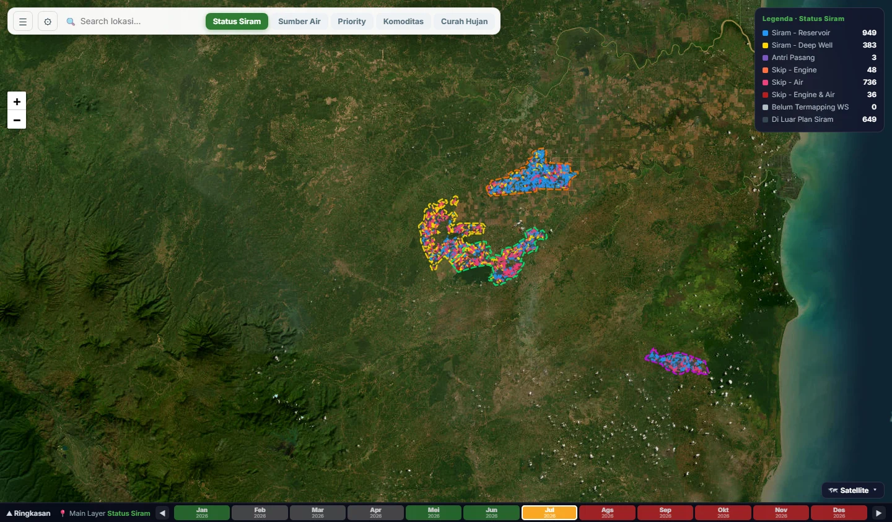

Selected work / 2026
From data to
working products.
A closer look at the systems I build: the problem, the product, and the engineering that connects them.
Muhammad Faris Muzakki
Data Scientist · Data & Software Engineer · AI
Selected use cases
AI / DATA / FULL STACK
Pine Yield Simulator
An end-to-end pineapple yield platform combining ML inference, what-if simulations, long-term planning and an agentic AI assistant.
Explore case study

I-Smart Water Management
A full-stack irrigation platform with interactive maps, versioned planning, operational analytics and an AI assistant for data exploration.
Explore case study
One developer. End to end.
I built both applications as a solo developer.
From translating operational needs into an application to implementing its data flows, AI capabilities and cloud delivery.
Solution architectureFrontend & backendData integrationAI & ML integrationCloud infrastructureCI/CD & maintenance